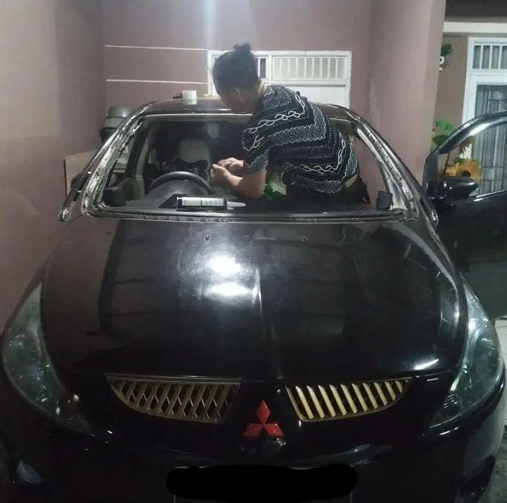

Usman Kaca Mobil melayani penggantian kaca mobil ke rumah anda langsung. Kami bisa mengganti Kaca kaca utama seperti windshield atau biasa disebut kaca bagian depan mobil, ataupun kaca kaca pintu maupun belakang yang mengalami keretakan maupun pecah yang diakibatkan berbagai hal musibah. Pengerjaan kami cepat dan menggunakan lem sealer Polyurethane khusus digunakan untuk instalasi kaca mobil, tidak berbau dan tidak merusak body mobil.

Mengapa Memilih Jasa Kami?
- Pelayanan 24 jam, kapan saja Anda butuhkan.
- Penggantian kaca langsung di lokasi Anda.
- Profesionalisme dan kualitas layanan yang terjamin.
- Harga kompetitif dengan layanan terbaik.
- Garansi pemasangan 1 tahun.
Kerugian Jika Anda Tidak Segera Mengganti Kaca Mobil
Menunda penggantian kaca mobil yang pecah atau retak dapat menyebabkan bahaya lebih besar saat berkendara, mengurangi visibilitas, dan memperburuk kerusakan. Investasikan pada penggantian kaca sekarang untuk memastikan keselamatan dan kenyamanan Anda di jalan.